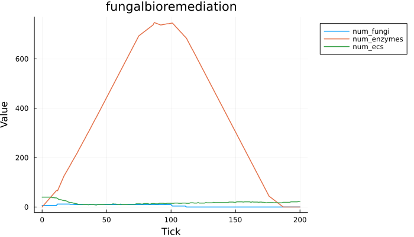
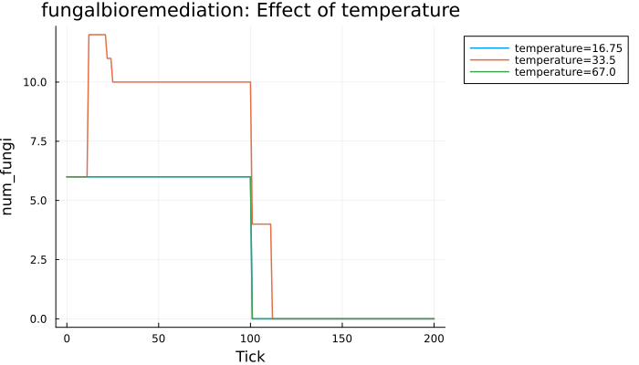

Fungal Bioremediation
Overview
WHAT IS IT?
This is a model of fungal bioremediation. In this model, white rot fungus produces enzymes that serve two purposes: breaking down lignin (a complex polymer found in wood) and degrading neonicotinoids (contaminants).
Lignin is broken down into glucose, which is then consumed by bacteria and fungi in cellular respiration. The fungi and bacteria have a symbiotic relationship. Since bacteria cannot break down lignin, they rely on fungal enzymes to break down lignin to produce glucose in the absence of other glucose.
The fungal enzymes also degrade neonicotinoids (contaminants in the water). While in reality, the neonicotinoids would be degraded into a potentially less harmful product, in this model, the neonicotinoids are simply modeled as being eliminated.
For further context, in a real world setting, white rot fungi growing on wood chips would function as a filter. As contaminated water flows through the fungi filter, the fungi convert neonicotinoids in the water into potentially less harmful products.
This model includes elements of enzyme kinetics and organisms’ competition for food.
HOW IT WORKS
When the experiment is set up, fungi, bacteria, and contaminants are randomly placed in the grid.
New fungi grow outward from old fungi, and as fungi age, they become less active and eventually die off. The fungi become whiter in color as they age. Fungi consume nutrients, glucose, and dissolved oxygen in the surrounding patches and produce enzymes that degrade lignin and neonicotinoids.
Bacteria also consume glucose, nutrients, and dissolved oxygen in the surrounding patches.
Nutrients and dissolved oxygen diffuse throughout the water.
Sliders control various factors that influence reaction rates, reproduction rates, water speed, oxygen levels, the starting amount of ECs, and the amount of energy gained from glucose consumption.
The first switch allows for the user to turn on nutrient replenishing, and the second switch allows for the user to turn on background coloring so that the background changes colors based on the levels of glucose present.
THINGS TO NOTICE
Notice the time it takes for a certain amount of contaminants to be removed and the percent of contaminants that are removed before all fungi die off.
Notice the colors of the patches. What does that indicate about the diffusing behavior of the nutrients and dissolved oxygen?
Notice the behavios of the fungi, bacteria, and enzyme populations. Are the populations always increasing? Always decreasing? Do they rapidly increase and then decrease?
Notice the shapes of the graphs for glucose, nutrients, lignin, and dissolved O2.
Notice the behavior at low and high water flow.
THINGS TO TRY
Task 1: There are three different sliders related to the reaction rate: temperature, pH, and uv-light. For each condition, there’s an optimal condition where the enzymes function best. Try to figure out what the optimal conditions are. Consider isolating each condition (don’t change multiple at once as that will make it difficult to determine how each change affected the experiment). Consider a model where the water speed = 0 and a model where the water speed = 1.
Task 2: There’s a cost associated with each of these conditions (e.g. keeping the solution at a constant temperature). Assuming all of the conditions cost the same amount to make optimal, figure out which two conditions at their optimal have the greatest positive impact on the rate. Which condition can be sub-optimal while having the smallest negative impact on the rate? Consider a model where the water speed = 0 and a model where the water speed = 1.
Task 3: Now, figure out which condition should be optimal if you can only have one optimal condition and the other two must be sub-optimal. Can you rank the conditions from least to greatest impact on rate?
Task 4: Consider changing the replenish O2 time. What happens when replenish O2 time is smaller? How about when it is larger?
Task 5: Considering all four sliders (temperature, pH, UV light, and replenish O2 time), try to modify the conditions so that you produce four different results in a model where water speed = 0: no removal of ECs, low removal of ECs, moderate removal of ECs, and high removal of ECs. For a model where water speed = 1, try to create conditions where there is low, moderate, and high numbers of ECs escaping.
Task 6: Determine the optimal water speed (1-5) for fungi survival and ensuring that few contaminants escape the filter. Why do you think this speed is the best? How does the idea of water speed apply in the real world? What engineering mechanisms could be added to ensure the optimal water speed?
Task 7: Using the different sliders and input boxes, find conditions that cause less fungi growth. Why do you think these conditions hurt fungi growth?
Final Task Part 1: Using any or all of the sliders, try to create a scenario where no species is too dominant or too weak, the reaction proceeds relatively quickly, and few contaminants escape.
Final Task Part 2: How many of sliders can you have at sub-optimal conditions while allowing minimal numbers of contaminants to escape. How far from the optimal condition can the sliders be while still maintaining low numbers of contaminants escaping.
EXTENDING THE MODEL
(suggested things to add or change in the Code tab to make the model more complicated, detailed, accurate, etc.)
NETLOGO FEATURES
(interesting or unusual features of NetLogo that the model uses, particularly in the Code tab; or where workarounds were needed for missing features)
CREDITS AND REFERENCES
(a reference to the model’s URL on the web if it has one, as well as any other necessary credits, citations, and links)
Parameters
| Parameter | Type | Default | Description |
|---|---|---|---|
temperature |
Float64 |
33.5 |
temperature |
pH |
Float64 |
5.0 |
pH |
fungi_species |
String |
"Pleurotus Ostreatus" |
fungi species |
initial_fungi |
Int |
6 |
initial fungi |
initial_ecs |
Int |
40 |
initial ecs |
ms |
Float64 |
0.5 |
mortality speed |
grid_width |
Int |
33 |
-16..16 |
grid_height |
Int |
33 |
grid height |
max_ticks |
Int |
200 |
max ticks |
Source Code
The Julia code to run this model:
using ArkModelZoo
_, trajectory = run_fungalbioremediation()Time Series

Ensemble Runs
Ten replicates with different random seeds, showing mean ± standard deviation.

Parameter Sensitivity
Varying temperature.

Appendix: Source Code
This model is implemented in the Ark.jl Entity-Component-System (ECS) framework. The code is split into five files, each with a distinct role:
- Parameters: a mutable struct holding all configurable values.
- Components: lightweight data types attached to individual entities (agents).
- Resources: world-level shared state accessible to all systems.
- Systems: functions that operate on entities each tick, defining model behavior.
- Model: wiring that assembles the world, registers resources and systems, and provides the run entry point.
Parameters (parameters.jl)
The parameter struct uses @kwdef so that every field has a default value and can be overridden by keyword. These defaults match the original NetLogo model’s slider settings.
Base.@kwdef mutable struct FBRParams
temperature::Float64 = 33.5
pH::Float64 = 5.0
fungi_species::String = "Pleurotus Ostreatus"
initial_fungi::Int = 6
initial_ecs::Int = 40
ms::Float64 = 0.5 # mortality speed
grid_width::Int = 33 # -16..16
grid_height::Int = 33
max_ticks::Int = 200
seed::Int = 42
endComponents (components.jl)
Components are lightweight data types attached to individual entities (agents). Mutable structs hold per-entity state, while empty tag structs act as markers for the ECS query system to efficiently filter entities.
struct FBRDummy endResources (resources.jl)
Resources are world-level singletons shared across all systems, used for global state and aggregate statistics.
# Species-specific parameters for fungi
struct FBRFungiSpecies
growth_temp::Float64
growth_pH::Float64
enzyme_production_cost::Float64
enzyme_production_pH::Float64
end
const FBR_SPECIES = Dict(
"Pleurotus Ostreatus" => FBRFungiSpecies(33.5, 4.0, 2.5, 5.0),
"Trametes Versicolor" => FBRFungiSpecies(24.0, 1.0, 1.0, 3.75),
"Phanerodontia Chrysosporium" => FBRFungiSpecies(30.0, 2.0, 1.0, 4.0),
)
mutable struct FBRFungus
x::Float64
y::Float64
age::Float64
energy::Float64
NH4::Float64
partner::Int # 0 = no partner, else index into ecs vector
alive::Bool
end
mutable struct FBREnzyme
x::Float64
y::Float64
age::Float64
heading::Float64
partner::Int # 0 = no partner, else index into ecs vector
turn::Float64
pause_time::Float64
alive::Bool
end
mutable struct FBREC
x::Float64
y::Float64
heading::Float64
partner::Int # 0 = no partner
locked_time::Int
taken::Bool # absorbed by a fungus intracellularly
alive::Bool
end
mutable struct FBRPatchGrid
width::Int
height::Int
glucose::Matrix{Float64}
O2::Matrix{Float64}
lignin::Matrix{Float64}
end
function FBRPatchGrid(w::Int, h::Int)
FBRPatchGrid(w, h, fill(4.0, w, h), fill(25.0, w, h), fill(100.0, w, h))
end
mutable struct FBRWorld
fungi::Vector{FBRFungus}
enzymes::Vector{FBREnzyme}
ecs::Vector{FBREC}
species_params::FBRFungiSpecies
ec_added::Int
intracellularly::Int
Kc::Int
Kr::Int
Kd::Int
complexes_formed::Int
dissociated::Int
adjuster_enzymes::Int
adjuster_fungi::Int
end
function FBRWorld(sp::FBRFungiSpecies)
FBRWorld(FBRFungus[], FBREnzyme[], FBREC[], sp,
0, 0, 0, 0, 0, 0, 0, 1, 1)
end
mutable struct FBRStats
num_fungi::Int
num_enzymes::Int
num_ecs::Int
end
FBRStats() = FBRStats(0, 0, 0)Systems (systems.jl)
Systems contain the model logic and execute in a defined order each tick. Each system struct implements either initialize! (run once at setup) or update! (run every tick).
# ============================================================
# Fungal Bioremediation – Systems
# Port of the NetLogo "Fungal Bioremediation" model.
# ============================================================
# ---------- helpers ----------
# Map continuous coordinate to 1-based grid index (world is -16..16, grid is 1..33)
@inline function _fbr_to_patch(v::Float64, size::Int)
clamp(round(Int, v) + (size ÷ 2 + 1), 1, size)
end
# Boundary-reflecting heading-based movement (NetLogo style)
function _fbr_move!(x::Ref{Float64}, y::Ref{Float64}, heading::Ref{Float64},
rng, half::Float64)
# random turn
heading[] += rand(rng) * 90.0 - 45.0
θ = deg2rad(heading[])
dx = sin(θ)
dy = cos(θ)
nx = x[] + dx
ny = y[] + dy
# Reflect off boundaries
if nx > half
nx = 2.0 * half - nx
heading[] = 360.0 - heading[]
elseif nx < -half
nx = -2.0 * half - nx
heading[] = 360.0 - heading[]
end
if ny > half
ny = 2.0 * half - ny
heading[] = 180.0 - heading[]
elseif ny < -half
ny = -2.0 * half - ny
heading[] = 180.0 - heading[]
end
x[] = clamp(nx, -half, half)
y[] = clamp(ny, -half, half)
heading[] = mod(heading[], 360.0)
return nothing
end
# Compact alive agents in-place (swap-remove dead ones)
function _fbr_compact!(v::Vector{T}) where {T}
i = 1
while i <= length(v)
if !v[i].alive
v[i] = v[end]
pop!(v)
else
i += 1
end
end
return nothing
end
# ============================================================
# Init system
# ============================================================
struct InitFBRSystem <: System end
function initialize!(::InitFBRSystem, world::World)
params = get_resource(world, FBRParams)
rng = get_resource(world, RNGResource).rng
fbr = get_resource(world, FBRWorld)
grid = get_resource(world, FBRPatchGrid)
stats = get_resource(world, FBRStats)
sp = FBR_SPECIES[params.fungi_species]
fbr.species_params = sp
# Reset patch grid
w, h = grid.width, grid.height
fill!(grid.glucose, 4.0)
fill!(grid.O2, 25.0)
fill!(grid.lignin, 100.0)
# Create fungi at random positions within [-14,14]
empty!(fbr.fungi)
for _ in 1:params.initial_fungi
fx = rand(rng) * 28.0 - 14.0
fy = rand(rng) * 28.0 - 14.0
push!(fbr.fungi, FBRFungus(fx, fy, 0.0, 30.0, 12.0, 0, true))
end
# Create ECs: x random in [-16,16], y = one-of(-16, 16)
empty!(fbr.ecs)
half = Float64(params.grid_width ÷ 2)
for _ in 1:params.initial_ecs
ex = rand(rng) * 2.0 * half - half
ey = rand(rng, Bool) ? half : -half
eh = rand(rng) * 360.0
push!(fbr.ecs, FBREC(ex, ey, eh, 0, 0, false, true))
end
empty!(fbr.enzymes)
fbr.ec_added = 0
fbr.intracellularly = 0
fbr.Kc = 0; fbr.Kr = 0; fbr.Kd = 0
fbr.complexes_formed = 0; fbr.dissociated = 0
fbr.adjuster_enzymes = 1; fbr.adjuster_fungi = 1
# Stats
stats.num_fungi = length(fbr.fungi)
stats.num_enzymes = 0
stats.num_ecs = length(fbr.ecs)
return nothing
end
# ============================================================
# Main go system – one NetLogo tick
# ============================================================
struct FBRGoSystem <: System end
function update!(::FBRGoSystem, world::World)
params = get_resource(world, FBRParams)
rng = get_resource(world, RNGResource).rng
fbr = get_resource(world, FBRWorld)
grid = get_resource(world, FBRPatchGrid)
stats = get_resource(world, FBRStats)
tick = get_resource(world, Tick).tick
sp = fbr.species_params
half = Float64(params.grid_width ÷ 2) # 16.0
w, h = grid.width, grid.height
n_fungi = count(f -> f.alive, fbr.fungi)
n_enzymes = count(e -> e.alive, fbr.enzymes)
n_ecs = count(e -> e.alive, fbr.ecs)
# --- stop conditions ---
if tick > 400 && n_ecs == 0
get_resource(world, Terminate).stop = true
return nothing
end
if tick > 1000
get_resource(world, Terminate).stop = true
return nothing
end
# --- diffuse glucose & O2 ---
diffuse_bounded!(grid.glucose, 0.5, w, h)
diffuse_bounded!(grid.O2, 0.5, w, h)
# --- update adjusters ---
fbr.adjuster_enzymes = max(round(Int, n_enzymes > 0 ? n_enzymes^(1/4) : 1.0), 1)
fbr.adjuster_fungi = max(round(Int, n_enzymes > 0 ? n_enzymes^(1/5) : 1.0), 1)
# --- move agents ---
_fbr_move_agents!(fbr, rng, half)
# --- break down lignin ---
_fbr_break_down_lignin!(fbr, grid, rng, n_enzymes, w, h)
# --- eat glucose ---
_fbr_eat_glucose!(fbr, grid, sp, w, h)
# --- replenish O2 ---
if tick > 0 && tick % 5 == 0
@inbounds for j in 1:h, i in 1:w
if grid.O2[i, j] <= 50.0
grid.O2[i, j] += 30.0
end
end
end
# --- reproduce ---
_fbr_reproduce!(fbr, grid, rng, params, sp, tick, w, h)
# --- produce ECs ---
if tick > 32 && tick % 6 == 0
for _ in 1:2
ex = rand(rng) * 2.0 * half - half
ey = rand(rng, Bool) ? half : -half
eh = rand(rng) * 360.0
push!(fbr.ecs, FBREC(ex, ey, eh, 0, 0, false, true))
fbr.ec_added += 1
end
end
# --- age fungus ---
for f in fbr.fungi
f.alive || continue
f.age += 1.0
end
# --- age enzymes ---
for e in fbr.enzymes
e.alive || continue
e.age += 1.0
end
# --- check death ---
_fbr_check_death!(fbr, params)
# --- nutrient status (energy decay) ---
for f in fbr.fungi
f.alive || continue
f.energy -= 0.5
f.NH4 -= 0.1
end
# --- intracellular degrade ---
_fbr_intracellular_degrade!(fbr, rng, half)
# --- denature ---
_fbr_denature!(fbr, params)
# --- degrade ECs (complex formation / dissociation / react-forward) ---
_fbr_degrade_ecs!(fbr, rng)
# --- compact dead agents ---
_fbr_compact!(fbr.fungi)
_fbr_compact!(fbr.enzymes)
_fbr_compact!(fbr.ecs)
# --- reindex partners after compaction ---
_fbr_clear_stale_partners!(fbr)
# --- stats ---
stats.num_fungi = length(fbr.fungi)
stats.num_enzymes = length(fbr.enzymes)
stats.num_ecs = length(fbr.ecs)
return nothing
end
# ---- sub-procedures ----
function _fbr_move_agents!(fbr::FBRWorld, rng, half::Float64)
for e in fbr.enzymes
e.alive || continue
e.partner != 0 && continue # partnered enzymes don't move
xr = Ref(e.x); yr = Ref(e.y); hr = Ref(e.heading)
_fbr_move!(xr, yr, hr, rng, half)
e.x = xr[]; e.y = yr[]; e.heading = hr[]
end
for ec in fbr.ecs
ec.alive || continue
ec.partner != 0 && continue # partnered ECs don't move
ec.taken && continue
xr = Ref(ec.x); yr = Ref(ec.y); hr = Ref(ec.heading)
_fbr_move!(xr, yr, hr, rng, half)
ec.x = xr[]; ec.y = yr[]; ec.heading = hr[]
end
end
function _fbr_break_down_lignin!(fbr::FBRWorld, grid::FBRPatchGrid,
rng, n_enzymes::Int, w::Int, h::Int)
# Unpartnered enzymes convert lignin → glucose
for e in fbr.enzymes
e.alive || continue
e.partner != 0 && continue
px = _fbr_to_patch(e.x, w)
py = _fbr_to_patch(e.y, h)
if grid.lignin[px, py] > 0.0
amt = min(grid.lignin[px, py], 1.0)
grid.lignin[px, py] -= amt
grid.glucose[px, py] += amt * 0.5
end
end
# If few enzymes, fungi also break down lignin
if n_enzymes < 5
for f in fbr.fungi
f.alive || continue
px = _fbr_to_patch(f.x, w)
py = _fbr_to_patch(f.y, h)
if grid.lignin[px, py] > 0.0
amt = min(grid.lignin[px, py], 0.5)
grid.lignin[px, py] -= amt
grid.glucose[px, py] += amt * 0.25
end
end
end
end
function _fbr_eat_glucose!(fbr::FBRWorld, grid::FBRPatchGrid,
sp::FBRFungiSpecies, w::Int, h::Int)
for f in fbr.fungi
f.alive || continue
px = _fbr_to_patch(f.x, w)
py = _fbr_to_patch(f.y, h)
avail_g = grid.glucose[px, py]
avail_o = grid.O2[px, py]
consume_g = min(avail_g, 2.0)
consume_o = min(avail_o, 1.0)
if consume_g > 0.0 && consume_o > 0.0
grid.glucose[px, py] -= consume_g
grid.O2[px, py] -= consume_o
f.energy += consume_g * 1.5
end
end
end
function _fbr_reproduce!(fbr::FBRWorld, grid::FBRPatchGrid, rng,
params::FBRParams, sp::FBRFungiSpecies,
tick::Int, w::Int, h::Int)
new_fungi = FBRFungus[]
new_enzymes = FBREnzyme[]
for f in fbr.fungi
f.alive || continue
# Reproduce conditions: age > 10, energy > 20, correct temp/pH ranges
temp_ok = abs(params.temperature - sp.growth_temp) < 5.0
pH_ok = abs(params.pH - sp.growth_pH) < 3.0
if f.age > 10.0 && f.energy > 20.0 && temp_ok && pH_ok
# Produce offspring fungus
f.energy /= 2.0
nx = f.x + rand(rng) * 2.0 - 1.0
ny = f.y + rand(rng) * 2.0 - 1.0
half = Float64(params.grid_width ÷ 2)
nx = clamp(nx, -half, half)
ny = clamp(ny, -half, half)
push!(new_fungi, FBRFungus(nx, ny, 0.0, f.energy, 12.0, 0, true))
else
# Produce enzyme if conditions met
pH_enz_ok = abs(params.pH - sp.enzyme_production_pH) < 2.0
if f.energy > sp.enzyme_production_cost && pH_enz_ok
f.energy -= sp.enzyme_production_cost
eh = rand(rng) * 360.0
push!(new_enzymes, FBREnzyme(f.x, f.y, 0.0, eh, 0, 0.0, 0.0, true))
end
end
end
append!(fbr.fungi, new_fungi)
append!(fbr.enzymes, new_enzymes)
end
function _fbr_check_death!(fbr::FBRWorld, params::FBRParams)
ms = params.ms
# Fungi die if energy <= 0 or age > threshold
for f in fbr.fungi
f.alive || continue
if f.energy <= 0.0 || f.age > 200.0 * ms
f.alive = false
end
end
# Enzymes die if age > threshold
for e in fbr.enzymes
e.alive || continue
if e.age > 150.0 * ms
e.alive = false
# Release partner EC if any
if e.partner != 0 && e.partner <= length(fbr.ecs)
ec = fbr.ecs[e.partner]
if ec.alive
ec.partner = 0
end
end
e.partner = 0
end
end
end
function _fbr_intracellular_degrade!(fbr::FBRWorld, rng, half::Float64)
# Fungi absorb nearby free ECs
for f in fbr.fungi
f.alive || continue
f.partner != 0 && continue
for (idx, ec) in enumerate(fbr.ecs)
ec.alive || continue
ec.taken && continue
ec.partner != 0 && continue
dist = sqrt((f.x - ec.x)^2 + (f.y - ec.y)^2)
if dist < 1.5
ec.taken = true
ec.locked_time = 0
f.partner = idx
fbr.intracellularly += 1
break
end
end
end
# Intracellularly absorbed ECs degrade after 34 ticks
for f in fbr.fungi
f.alive || continue
f.partner == 0 && continue
pidx = f.partner
if pidx <= length(fbr.ecs) && fbr.ecs[pidx].alive && fbr.ecs[pidx].taken
fbr.ecs[pidx].locked_time += 1
if fbr.ecs[pidx].locked_time >= 34
fbr.ecs[pidx].alive = false
f.partner = 0
end
else
f.partner = 0
end
end
end
function _fbr_denature!(fbr::FBRWorld, params::FBRParams)
# Enzymes age faster based on pH distance from optimal
ph_diff = abs(params.pH - 5.0)
extra_age = ph_diff * 0.5
for e in fbr.enzymes
e.alive || continue
e.age += extra_age
end
end
function _fbr_degrade_ecs!(fbr::FBRWorld, rng)
# Form complexes: free enzyme + free EC within distance
for (eidx, e) in enumerate(fbr.enzymes)
e.alive || continue
e.partner != 0 && continue
for (cidx, ec) in enumerate(fbr.ecs)
ec.alive || continue
ec.partner != 0 && continue
ec.taken && continue
dist = sqrt((e.x - ec.x)^2 + (e.y - ec.y)^2)
if dist < 2.0
e.partner = cidx
ec.partner = eidx
fbr.complexes_formed += 1
fbr.Kc += 1
break
end
end
end
# Dissociate some complexes (stochastic)
for (eidx, e) in enumerate(fbr.enzymes)
e.alive || continue
e.partner == 0 && continue
pidx = e.partner
(pidx > length(fbr.ecs) || !fbr.ecs[pidx].alive) && begin
e.partner = 0; continue
end
ec = fbr.ecs[pidx]
ec.taken && continue # intracellular, skip
# Dissociation probability
if rand(rng) < 0.1
ec.partner = 0
e.partner = 0
fbr.dissociated += 1
fbr.Kr += 1
end
end
# React forward: enzyme-EC complex → EC destroyed, enzyme released
for (eidx, e) in enumerate(fbr.enzymes)
e.alive || continue
e.partner == 0 && continue
pidx = e.partner
(pidx > length(fbr.ecs) || !fbr.ecs[pidx].alive) && begin
e.partner = 0; continue
end
ec = fbr.ecs[pidx]
ec.taken && continue
# Reaction probability
if rand(rng) < 0.15
ec.alive = false
e.partner = 0
fbr.Kd += 1
end
end
end
# After compaction, partner indices may be stale – clear them.
function _fbr_clear_stale_partners!(fbr::FBRWorld)
# Build lookup: old indices are invalid after compact, so reset all partnerships
# and re-establish based on proximity is too expensive; instead just clear stale refs.
for f in fbr.fungi
if f.partner != 0
if f.partner > length(fbr.ecs) || !fbr.ecs[f.partner].alive || !fbr.ecs[f.partner].taken
f.partner = 0
end
end
end
for e in fbr.enzymes
if e.partner != 0
if e.partner > length(fbr.ecs) || !fbr.ecs[e.partner].alive
e.partner = 0
end
end
end
for ec in fbr.ecs
if ec.partner != 0
if ec.partner > length(fbr.enzymes) || !fbr.enzymes[ec.partner].alive
ec.partner = 0
end
end
end
end
# ============================================================
# Termination system
# ============================================================
struct FBRTerminationSystem <: System end
function update!(::FBRTerminationSystem, world::World)
params = get_resource(world, FBRParams)
tick = get_resource(world, Tick)
if tick.tick + 1 >= params.max_ticks
get_resource(world, Terminate).stop = true
end
return nothing
endModel (model.jl)
The model file assembles all pieces: it creates the ECS World with the required component types, registers resources, builds the Scheduler with systems in execution order, and exposes the public run entry point. The observer pattern records the trajectory each tick.
function fungalbioremediation_world(; initial_capacity::Int = 256)
return World(
FBRDummy;
initial_capacity = initial_capacity,
allow_mutable = true,
)
end
function fungalbioremediation_systems()
return (
InitFBRSystem(),
FBRGoSystem(),
FBRTerminationSystem(),
)
end
function fungalbioremediation_model(params::FBRParams = FBRParams())
world = fungalbioremediation_world()
sp = get(FBR_SPECIES, params.fungi_species,
FBRFungiSpecies(33.5, 4.0, 2.5, 5.0))
_add_standard_resources!(world, params)
add_resource!(world, FBRPatchGrid(params.grid_width, params.grid_height))
add_resource!(world, FBRWorld(sp))
add_resource!(world, FBRStats())
scheduler = Scheduler(world, fungalbioremediation_systems())
initialize!(scheduler)
return scheduler
end
struct FBRObserver end
function fungalbioremediation_headers(::FBRObserver)
return ["num_fungi", "num_enzymes", "num_ecs"]
end
function fungalbioremediation_values(::FBRObserver, world::World)
stats = get_resource(world, FBRStats)
return Float64[stats.num_fungi, stats.num_enzymes, stats.num_ecs]
end
function run_fungalbioremediation(; params::FBRParams = FBRParams(), observe::Bool = true)
return _run_model(fungalbioremediation_model, FBRObserver(), fungalbioremediation_values; params, observe)
end